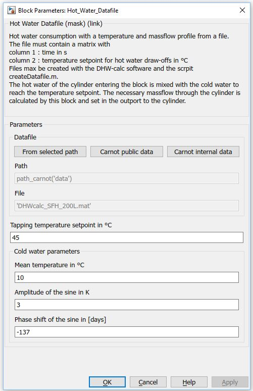
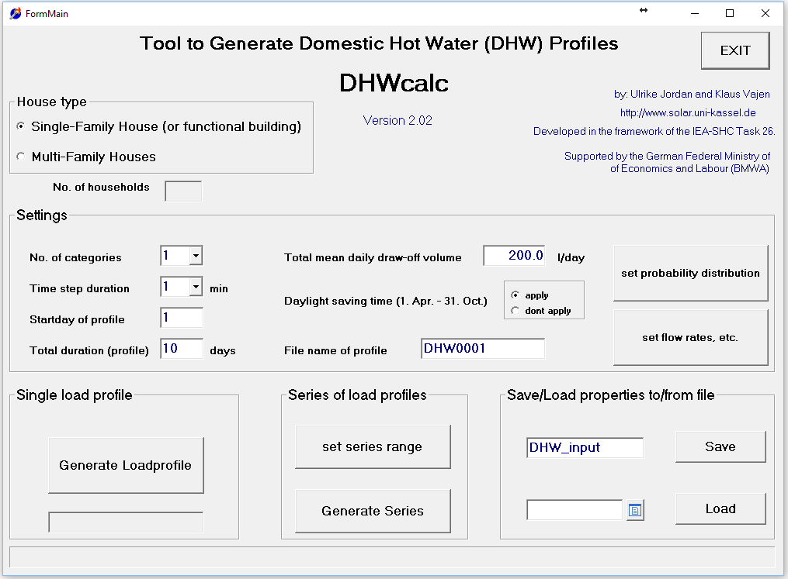

Path: CARNOT/Load/Hot_Water_Tapping
Purpose
Hot water consumption with a temperature and massflow profile from a file.
Description
There are different methods to evaluate the hot water comfort (see QAIST 2012).
In the current model the block creates a hot
water consumption
profile
with a
tapping
temperature
setpoint
and
a massflow rate. The data is read from file which may be created with
statistical tools [Jordan, Vajen 2018].
The
file must contain a matrix with
column 1 : time in s
column 2 : massflow at timestep in kg/s
Files max be created with the DHW-calc software and the scrpit createDatafile.m.
The hot water of the
cylinder entering the block is mixed with the cold water to reach the
temperature setpoint. The necessary massflow through the cylinder is calculated
by this block and set in the outport to the cylinder.
Parameters and Dialog Box

Application example: DHWcalc

Figure: View of the input parameters of DHWcalc [DHWcalc 2018]
Literature
Jordan, Ulrike & Vajen, Klaus. (2005). DHWcalc: PROGRAM TO GENERATE DOMESTIC HOT WATER PROFILES WITH STATISTICAL MEANS FOR USER DEFINED CONDITIONS.
DHWcalc: Download section for the software, University of Kassel, 2018
Characteristics
Direct Feedthrough Yes
Sample
time
Inherited
from driving block
Vectorized
No